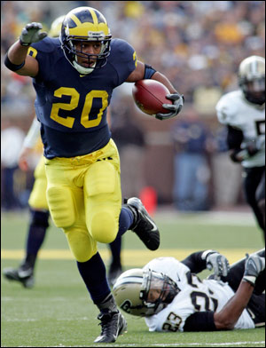

and sometimes downright fishy
thoughts on Technology and Leadership
by Herb Bowie
Broken Field Running
Now that we’re in the thick of another US college football season, it occurs to me that IT application developers might benefit from having a different mental model to represent the work they do.
When I talk to architects, analysts and programmers about their projects, they often describe them as if they were heading in a straight line from some known starting point to a clearly defined end state – almost as if they were running at a track meet.
And yet, when I watch football on autumn Saturdays, I can’t help but notice… very few touchdowns get scored this way. This is because the ball carriers have to avoid obstacles on the way to the goal line. And so what you see is something described by the picturesque phrase, “broken field running,” meaning “varying in direction suddenly and frequently.”

So which mental model is most appropriate for application developers? Many of us have been conditioned – either through personal preference or education or some form of institutional indoctrination – to think of application development as some sort of well-organized, relatively straightforward effort to coming up with technical solutions for well-defined business problems.
But is this really the way that it works?
To some extent, yes. Just as a football player needs a mastery of the basic skills, and an understanding of his team’s playbook, developers need to know the basics of their craft, and how they plan to work together with other team members.
Beyond that, though, I tend to think that successful application developers need the skills of a running back: they need to understand where the goal line is, and need to quickly observe and take advantage of opportunities to advance as far as they can towards the goal as quickly as possible.
How does this translate into app development?
-
If we think of business value as the goal line, then developers need to actively look for opportunities to maximize business value while minimizing the investment necessary to achieve it.
-
If there are multiple ways to achieve the same or comparable business value, then applications professionals need to consider alternate routes to the goal: things like purchased or open-source software or reuse of existing assets, as well as varying technical alternatives.
-
Since it is often the case that some paths forward are blocked by organizational politics, or technical difficulties, or excessive cost and schedule demands, developers need to consider other paths that will still allow them to advance towards the goal.
-
If a development team is not sure of a safe way forward, it is generally better to try something quickly than to wait too long for an opening: otherwise they may get overrun, and even lose ground.
-
In some cases, when adversarial forces are rapidly closing in on them, developers may need to abandon their hopes of advancing at all, and just try to hang onto the ball so that they can have another better opportunity to add business value on a future play.
-
If a team is not making enough yards per play to score a first down, then they probably need to consider some alternatives before being forced to turn the ball over to someone who may be able to do more with it.
Mike Gualtieri of Forrester Research seemed to have something similar in mind when writing a recent blog post on the Future of Application Development. Mike starts by saying:
I have grown weary of hearing excuses (for 20 years) from application development professionals about why they are challenged when it comes to developing and delivering applications that meet the expectations of the business.
And he ends by saying:
For years, app dev pros have been told to keep their heads down – that all you need to do is follow the project plan and write your code. Wrong. Lift your head up, find your passion, understand the business and then use your technical creativity to make beautiful applications that users find useful, usable and desirable.
Of course in all this discussion I have so far avoided use of any analogies to foreign sports I really don’t understand, and have resisted using the word agility to describe one of the attributes needed by a successful running back.
So, one might reasonably ask, what about Scrum and Agile? Don’t these approaches already adequately address the problem I’m describing? If you’re developing software in brief iterations, and using a scrum master, or otherwise making use of Agile methods, don’t you have this problem nailed?
Well, frankly, I’m not so sure. My sense is that, when reading some of the early works of authors who later became part of the agile movement, there’s a greater emphasis on agility in the sense that I’m describing it. When listening to many modern reports from agile development teams, though, they frankly sound like they have just timeboxed their traditional approach. And while this is a great improvement – planning to proceed in short sprints rather than a single grand marathon – this is not the same thing that I’m describing. Running in short sprints is not the same as broken field running. And until developers get the sense of this, they may well have trouble scoring touchdowns.
September 23, 2009
Next: Getting Metrics Right